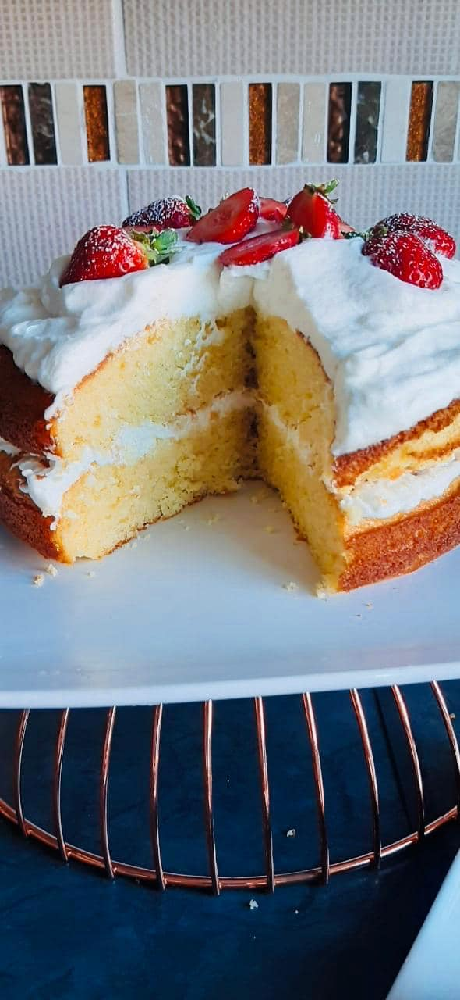

Hot Milk Sponge cake
Prep time : 30 - 45 min
Yield: 12
Ingredients
4 eggs
250ml Castor sugar
500ml (2 cups) flour
15ml baking powder
Pinch of salt
250ml mil
125g margarine or butter
5ml vanilla essence
1 tub of cream
125ml icing sugar
1 tub of strawberries
Steps
Whisk the eggs and sugar together until light and fluffy
Sift flour, bp and salt together and fold into the eggs mixture
Heat the milk and butter together but do not boil. Add the essence and stir into the batter. Pour into 2 greased cake Pan's
Bake in a pre heated oven at 180c for 25_30 minutes. Cool slightly in the pans beforr turning out onto a wire rack to cool futher.
In your stand mixer or hand, whsik the cream and sugar together till cream is fluffly .
Use half the cream to sandwich the two cake layers together then the top with the remaining cream.
Strawberries on top with sifted icing sugar